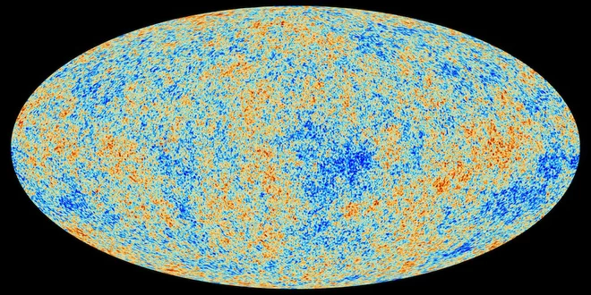
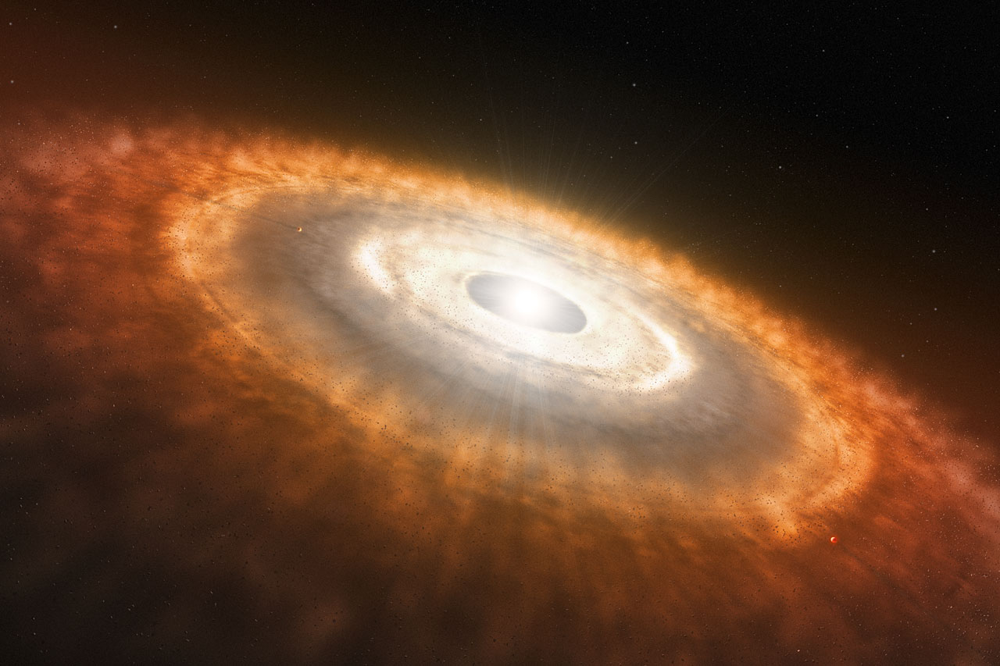
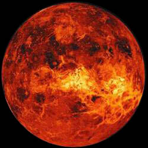
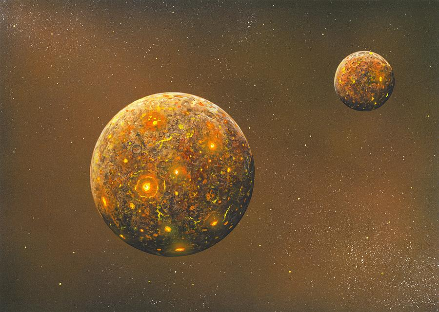

History of the Earth
The following is the entire history of the Earth, from the big bang to the present. Enjoy.
The Big Bang: 13.8 Billion years ago

Space stretched into existence 13.8 billion years ago when the universe underwent a huge change in density; in less than a minute the universe expanded from being almost nothing in size to spanning over a million billion miles across.
Earth's solar system begins to form: 4.6 billion years ago

Earth's solar system began to flatten into a disk and the sun began to fuse hydrogen about 4.6 billion years ago. At this point already 99.9 percent of the mass of the solar system wnt to the sun in the center.

About 200 million years after the formation of the sun came the formation of the Earth. It doesn't resemble the Earth today because it was still molten hot and being bombarded by asteroids and other planetessimals.

About 4.5 billion years ago, while the Earth was still molten, a planetary object around the size of mars collided with the Earth. The resultant debris began to orbit the Earth and, through gravity, came together to form the moon.